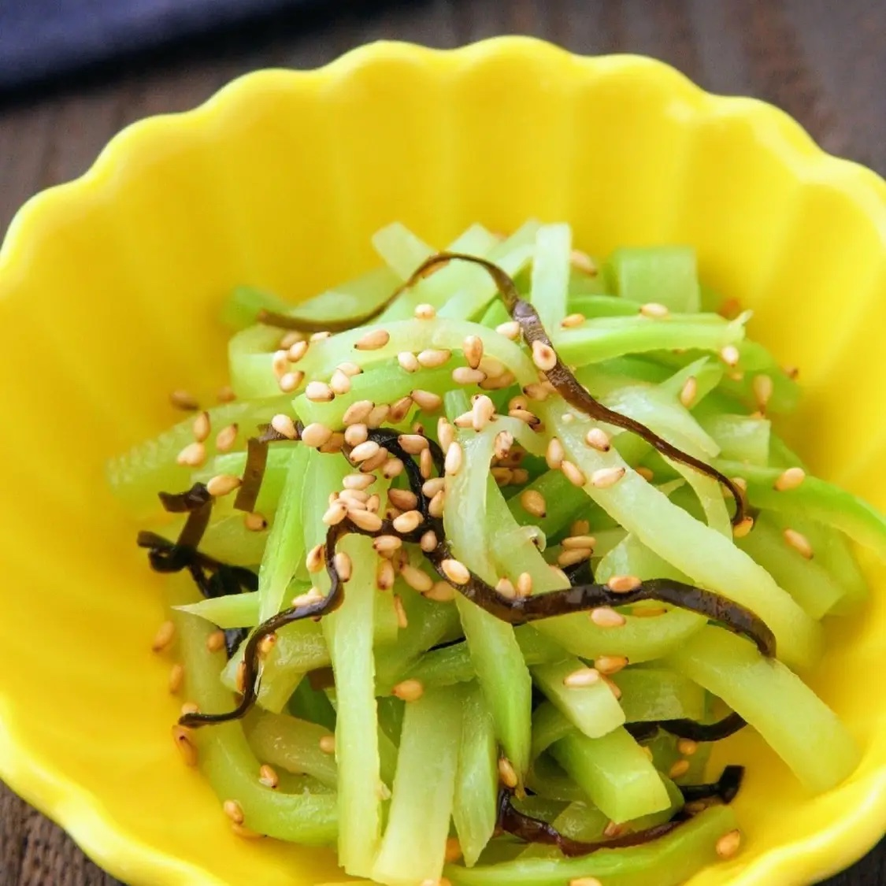

Broccoli Side Dish Recipe

Description
This broccoli side dishis a delicious way to use the stems of the broccoli.
Try this Japanese recipe and help eliminate your food waste!
Ingredients (two servings)
- Broccoli stem - 1
- A. Chicken soup stock - 1/4 teaspoon
- A. Salted kelp - a pinch
- A. Sesame oil - 1 teaspoon
- A. Sesame seeds - a pinch
Steps
Point!Microwave at 800W. Adjust the time according to the microwave and the thickness of the broccoli.
- Cut off the broccoli stem and cut the stem into thin strips.
- Place the broccoli in a microwave-safe container, cover with plastic wrap, and microwave for 40 seconds to a minute.
- Drain the excess water and combine the broccoli stems with A. Adjust seasoning as needed.